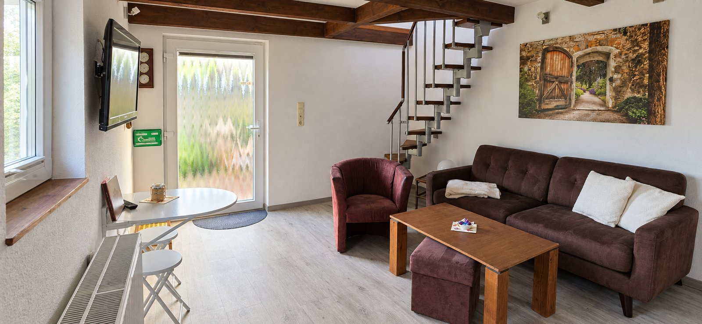
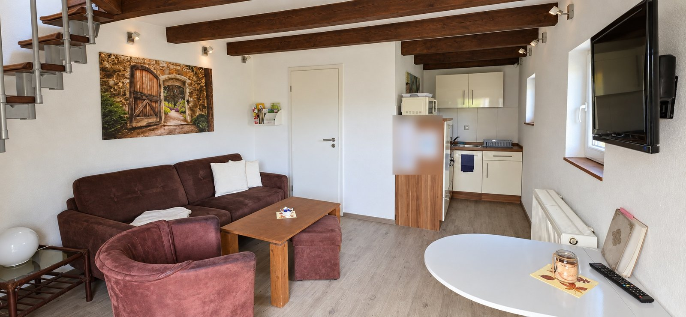
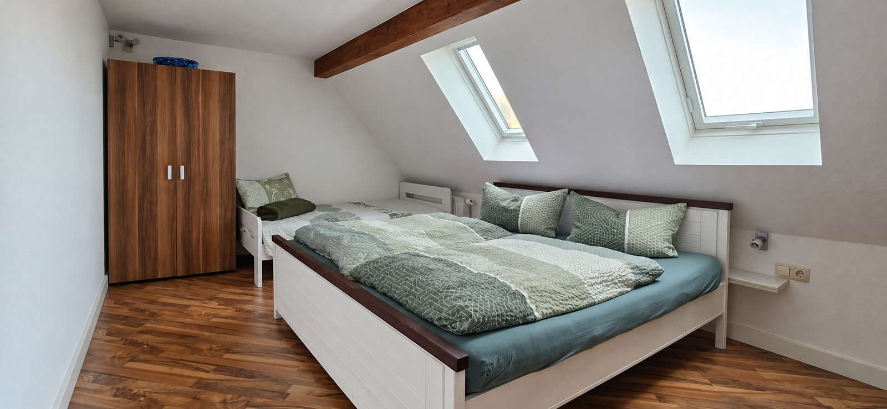
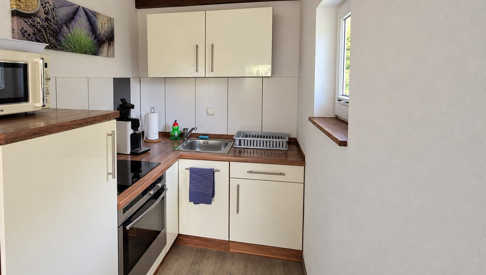
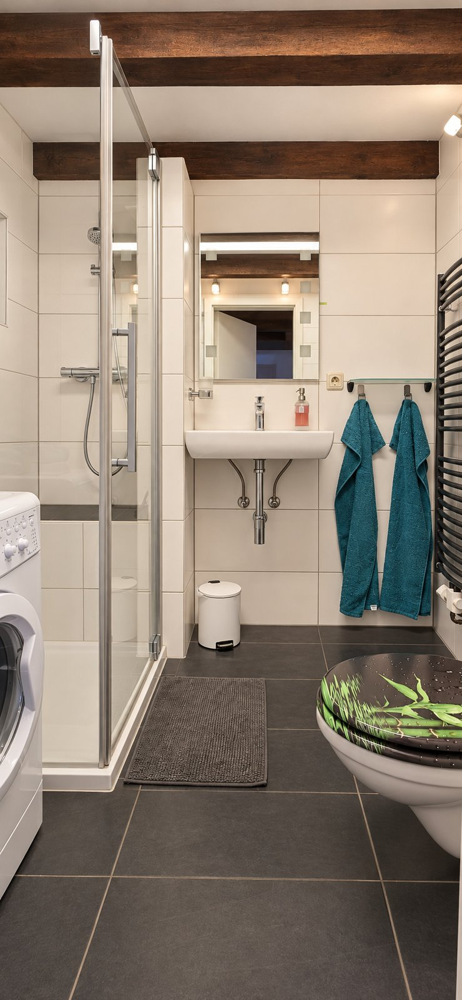
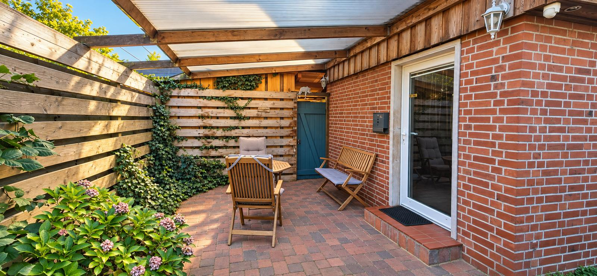

Bardowicker Strand
Der „Bardowicker Strand“ ist ein wunderschönes Naturbad für die ganze Familie.
Weitere InformationenAlles für den perfekten Urlaub
Gemütlich, sauber und modern: Das Gästehaus Perschall bietet Erholung, kurze Wege nach Lüneburg, Hamburg und in die Lüneburger Heide. Viel Natur direkt vor der Tür.
 BARDOWICK · LÜNEBURGER HEIDE
BARDOWICK · LÜNEBURGER HEIDEÜber uns
Unser Gästehaus liegt im östlichen Teil von Bardowick. Sämtliche Einkaufsmöglichkeiten sind im Ort vorhanden.
Die Innenstadt von Lüneburg ist mit öffentlichen Verkehrsmitteln auf direktem Wege in ca. 10 Minuten zu erreichen. Haltestationen für Bus und Bahn befinden sich in unmittelbarer Nähe.
Hamburg und die Heide erreichen Sie in ca. 20 Minuten. Eine Stunde ist es bis zur Ostsee. Ferner bieten wir zahlreiche Golfplätze – den ersten erreichen Sie mit dem Auto in ca. 8 Minuten: das Golf-Resort Adendorf.







Das Haus
Einblicke in Wohnzimmer, Schlafzimmer, Küche, Badezimmer und Terrasse.
Landwehr und Bardowick
Spaziergänger und Hundebesitzer kommen bei uns in der Landwehr voll auf ihre Kosten. Weite Wälder und schöne Landschaften laden zu langen Spaziergängen ein.


Dieses Paradies ist nur 100 Meter von Ihrer Haustür entfernt.
Bardowick und Umgebung
Besuchen Sie den Bardowicker Dom, den Bardowicker Strand oder machen Sie einen Abstecher nach Lüneburg.
Der „Bardowicker Strand“ ist ein wunderschönes Naturbad für die ganze Familie.
Weitere Informationen
Entdecken Sie den Bardowicker Dom St. Petri et Pauli. Zu seiner historischen Ausstattung gehören ein bronzenes Taufbecken, der Marienaltar und das Chorgestühl.
Weitere Informationen zum Dom
Die Bardowicker Mühle sollten Sie unbedingt besuchen. Auch die Ilmenau lädt zu Spaziergängen und Picknick ein.
Weitere Informationen zur Mühle

Entdecken Sie die Lüneburger Heide mit ihren Heideflächen und Wäldern, zu Fuß oder mit dem Rad. Besonders zur Heideblüte bietet die Landschaft einen farbenfrohen Anblick.
Weitere Informationen zur Lüneburger HeidePreise
Unsere Preise verstehen sich inkl. MwSt., Nebenkosten, Bettwäsche und Handtüchern.
| Belegung | 1. Nacht | Jede weitere Nacht |
|---|---|---|
| Bis 2 Personen | 100,- € inkl. 50 € Endreinigung | 50,- € |
| Aufbettung / weitere Person Kinder bis 16 Jahre: 10 Euro | 20,- € | 20,- € |
| Haustiere | 8,- € pro Haustier und Nacht | |
Berechnen Sie hier den Richtpreis für Ihren Aufenthalt.
Bitte wählen Sie An- und Abreise.
Richtpreis inkl. MwSt., Nebenkosten, Bettwäsche und Handtüchern. Verbindlich ist unser persönliches Angebot.
Bei unseren Preisen handelt es sich um Richtpreise. Wenn Sie einen längeren Aufenthalt wünschen, kann dieser individuell abgesprochen werden.
Liebe Gäste, unser kleines Gästehaus soll für Sie wie ein zweites Zuhause sein. Wir haben uns mit der Einrichtung sehr viel Mühe gegeben und sind auf viele Wünsche unserer Gäste eingegangen.
Niemand beschädigt absichtlich Sachen, es kann jedoch jedem passieren, dass einmal etwas kaputt geht. Bitte teilen Sie uns entstandene Schäden mit.
Fenster und Türen sind beim Verlassen der Wohnung zu schließen. Bitte achten Sie darauf, dass alles Licht ausgeschaltet ist. Lüften sollte selbstverständlich sein.
Rauchen ist im Gästehaus nicht erlaubt. Auf der Terrasse können Sie gerne rauchen; dort ist ein Aschenbecher vorhanden.
Bitte geben Sie die Schlüssel nie aus der Hand. Ein Verlust ist umgehend zu melden.
Wir begrüßen Ihre Vierbeiner. Bitte sorgen Sie dafür, dass Haustiere nicht im Bett schlafen oder auf das Sofa gehen. Hunde sind während des Aufenthaltes ständig zu beaufsichtigen.
Mit Bestätigung einer Buchung haben Sie automatisch die Hausordnung anerkannt. Wir wünschen all unseren Gästen einen angenehmen Aufenthalt.
Für eine feste Buchung benötigen wir innerhalb von einer Woche nach Ihrer Anfrage Ihre verbindliche Zusage. Die Zahlung erfolgt per Vorkasse oder bar bei Anreise. Eine Kaution erheben wir nicht, eine Kurtaxe fällt nicht an.
Bei vorzeitiger Abreise werden nicht in Anspruch genommene Übernachtungen nicht erstattet. Umbuchungen besprechen wir gern im Einzelfall.
Müssen wir einen Aufenthalt absagen, erstatten wir bereits geleistete Zahlungen vollständig.
Mit Bestätigung einer Buchung erkennen Sie diese Buchungs- und Stornierungsbedingungen an.
Belegungsplan
Hier sehen Sie die aktuelle Belegung unseres Gästehauses. Der Abreisetag bleibt gesperrt; eine neue Anreise ist frühestens am Folgetag möglich.
Zeitraum frei? Jetzt anfragen.
Kontakt
Anfahrt
Das Gästehaus liegt in Bardowick, nur wenige Kilometer von Lüneburg entfernt.
In OpenStreetMap öffnenDie Karte wird erst geladen, wenn Sie zustimmen. Dabei werden Ihre IP-Adresse und Browserinformationen an OpenStreetMap übertragen.